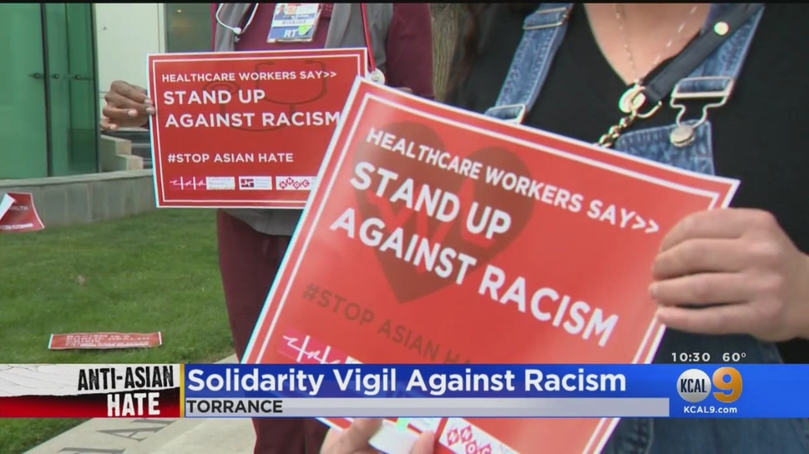
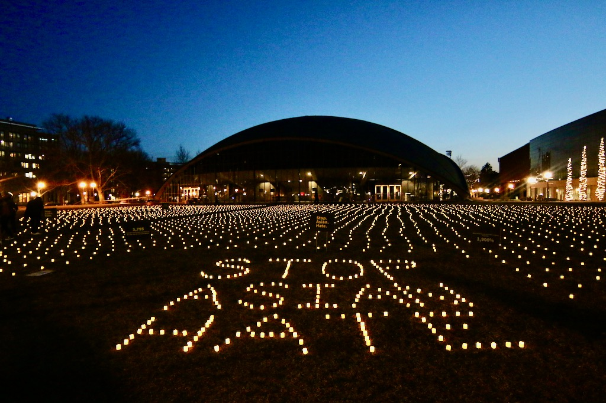
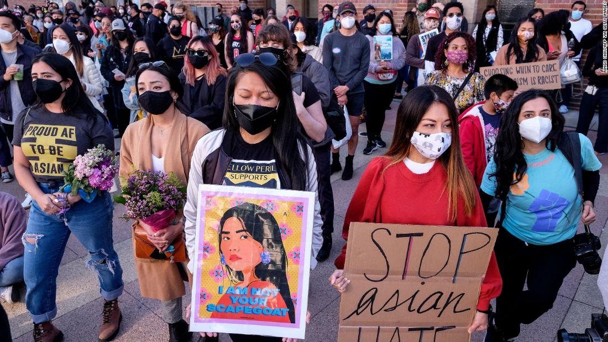
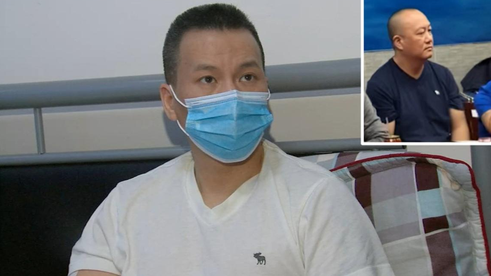

Stories
Home
Stories
Donations
Resources
Take Action
Brooklyn man arrested after alleged involvement in three anti-Asian hate crime incidents within a month
CNN; April 10, 2021

Healthcare Workers Gather For Solidarity Vigil Against AAPI Hate
CBSN Los Angeles; April 9, 2021

Standing in solidarity with the AAPI community
MIT News; April 9, 2021
AAPI Community Holds Funeral For Atlanta Shooting Victim With No Friends, Family in US
Yahoo News; April 9, 2021
AAPI leaders: In this current moment, "the solution is visibility"
Yahoo News; April 8, 2021
Asian-American Woman Stabbed To Death By Transient Woman While Walking Dogs In Riverside
CBS Los Angeles; April 4, 2021

Asian Americans reported being targeted at least 500 times in the last two months
CNN; March 18, 2021
8 Killed in shootings at 3 Atlanta-area spas, one suspect in custody
CBS; March 17, 2021

Man distraught after watching fellow good Samaritan in Sunset Park stabbing die
abc7NY; March 4, 2021